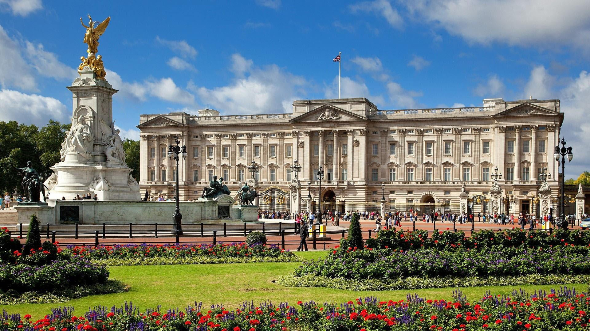
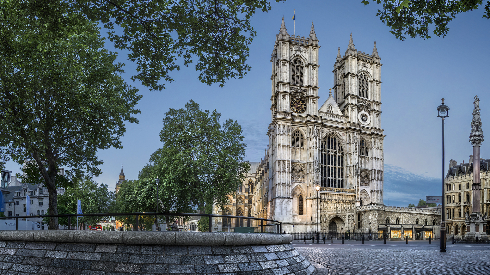

Londres
Palacio de Buckingham
El Castillo de Buckingham es una de las residencias oficiales de la monarquía británica, ubicada en el centro de Londres. Originalmente construido en el siglo XVIII como una casa privada para la familia del duque de Buckingham, el castillo fue adquirido por el rey Jorge III en 1761 y ha sido la residencia oficial de la monarquía británica desde entonces.
El Castillo es famoso por su arquitectura neoclásica, sus hermosos jardines y su impresionante colección de obras de arte. También es famoso por sus ceremonias oficiales, como el Cambio de Guardia y la Salida de los Corceles Reales, que atraen a multitudes de turistas de todo el mundo.
Visitar el Castillo de Buckingham es una experiencia inolvidable para aquellos que desean conocer más sobre la monarquía británica y su rica historia.
Big Ben

Big Ben es el apodo de la Gran Campana de la Torre del Reloj del Palacio de Westminster, ubicado en el centro de Londres. Aunque muchas personas se refieren a la torre en sí como "Big Ben", el apodo se refiere específicamente a la campana de 13,7 toneladas.
La Torre del Reloj de Westminster es una estructura icónica que forma parte del patrimonio cultural de Londres. Fue construida en 1859 y es un ejemplo impresionante de la arquitectura victoriana. El reloj de la torre es famoso por su precisión y por sus cuatro caras iluminadas, que se pueden ver desde varios puntos de la ciudad.
Visitar Big Ben es una experiencia única para los turistas que visitan Londres, y es una de las principales atracciones turísticas de la ciudad.
Ojo de Londres

El Ojo de Londres, también conocido como la Rueda del Milenio, es una enorme noria ubicada en el South Bank del río Támesis en Londres, Inglaterra. Con una altura de 135 metros, es una de las norias más grandes del mundo y ofrece vistas panorámicas impresionantes de la ciudad.
El Ojo de Londres fue inaugurado en el año 2000 y desde entonces ha sido una atracción turística popular. Cada cápsula de la noria tiene capacidad para 25 personas y un recorrido completo tarda aproximadamente 30 minutos. Durante el recorrido, los visitantes pueden disfrutar de vistas panorámicas del río Támesis, el Puente de la Torre, el Big Ben, el Palacio de Westminster y otros lugares emblemáticos de Londres.
Visitar el Ojo de Londres es una experiencia única y emocionante para aquellos que desean ver la ciudad desde una perspectiva diferente y disfrutar de vistas espectaculares.
Abadía de Westminster
La Abadía de Westminster, ubicada en el centro de Londres, es una iglesia anglicana famosa por ser el lugar donde se han coronado a los monarcas británicos desde Guillermo el Conquistador en 1066. También es el lugar de sepultura de muchos monarcas y figuras históricas, como la reina Isabel I y Sir Isaac Newton.
La abadía es un ejemplo impresionante de la arquitectura gótica inglesa y cuenta con numerosas capillas y monumentos dentro de sus paredes. Su construcción comenzó en el siglo XI y ha sido renovada y ampliada en varias ocasiones a lo largo de los siglos.
Visitar la Abadía de Westminster es una experiencia impresionante para los turistas que visitan Londres. Los visitantes pueden disfrutar de una visita guiada para aprender sobre la historia y la arquitectura de la abadía, y también tienen la oportunidad de asistir a servicios religiosos.